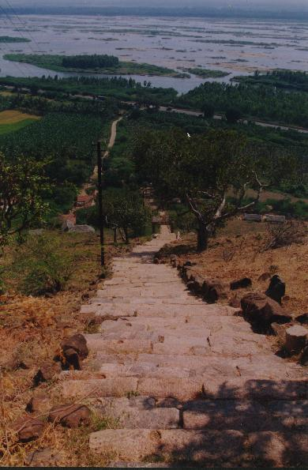
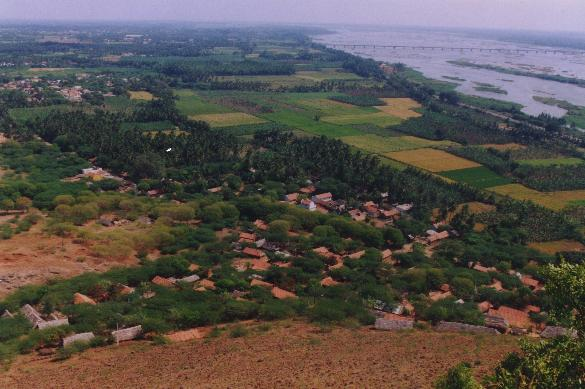
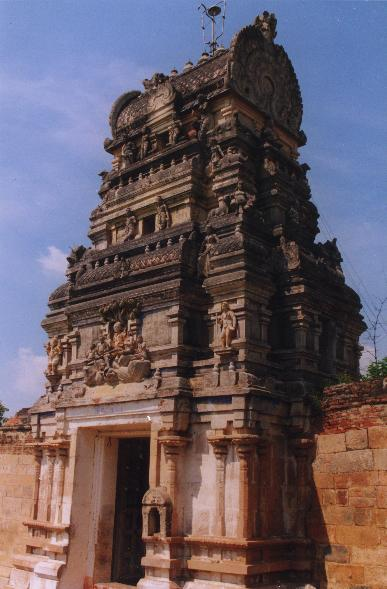
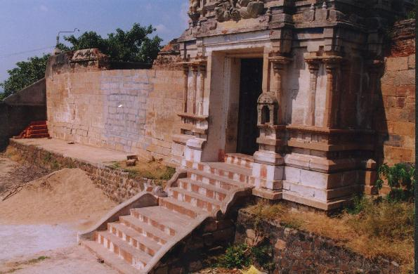

īṅkōymali
- Identifier: KV63
- Modern Name (NIC):
- Modern Name (M.I.): tiruviṅkanātamāli
- Modern Name (Govt Press):
- Modern Name (BABU): TIRUVENGIMALAI
- Modern Name:
- Modern District & Taluk: karūr DT (muciri TK OR toṭṭiyam TK)
- Old administrative location: Trichinopoly DT (Moosiry TK)
- Nearby town: muciri (3 km)
- Visit date: 25 january 2000 (Charlotte SCHMID)
- GPS reading: 10 deg. 57' & 78 deg. 25'
- Railway station: kuḷittali
- Post Office: īṅkōy mali
- Longit. 78 deg. 25'; Latit. 10 deg. 58' [KV63]
- C.D.Maclean-3: entry: MOOSIRY, p. 515, col. 2,
[Tirvenginutamullay (in Places of archeological interest)]
- Location: according to PK: Cōḻa Nāṭu, Kāvēri Vaṭa Kari (KV63)
- Name inside hymns:
- Name inside PK:
- Rank inside third volume of PIFI: 43
- Rank inside Civastala Mañcari: 43
- Rank on PY576 map:
- Total number of patikam-s: 1
- Campantar: 1 patikam
9 pictures taken on 2000 january 25th (by G. Ravindran and C. Schmid)









- Patikam 1_70